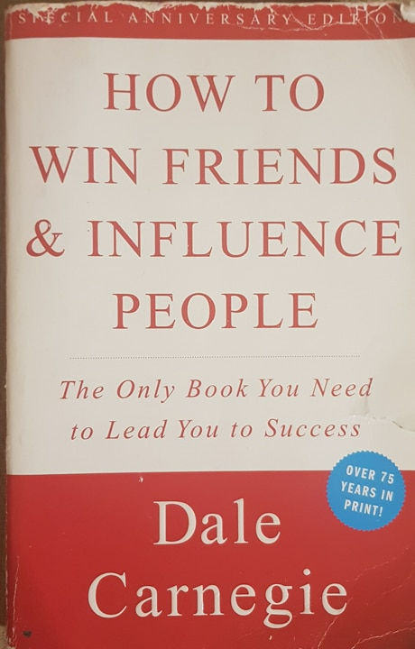

 "How to Make Friends and Influence People", is an amazing book written by Dale Carnegie, quite a while ago. The way I go to reading this book, is ecause my boss at the time, who I realy admired, before leaving the work gave it to me as a gift. Anything I got from him I highly valuede, and trusted this book is ment for me and will help me in my life. I started reading the book and the first thing that it emphasized was to read every chapter twice. Being the hot tempered and stuborn Macedonian that I am, of course I decided I will not follow this instruction. Only a few chapters later, I realized this was a big mistake and re read it not twice but three or four times. I love instructional books, and this one has the credibility to instruct you well. It is full of many examples of people who used the principles it talks about, and how they suceeded. This is why it is necessarry to repeat the principles, because otherwise you forget them and you are not able to make a change in your situation. I started using these principles in my life and I was surprised how it changed me. In the next few weeks, I will be writing about each chapter, the lesson it gives and how I have experienced it or seen it in my life. This is a really great book and if youre interested this is wehre you can Buy The Book